Aktiekurs: 104.4 SEK
Börsvärde value: 8 457 MKR
Marknad: Large Cap
Ticker: VOLO
Enterprise value: 11 004 MKR
Antal aktier: 79.4 miljoner aktier
Omsättning: 8 242 MKR
Vinst: 285 MKR
VD: Anders Stenbäck
Styrelseordförande: Patrik Wahlén
Jakob Johannesson
September 15, 2023
February 9, 2026
Aktiekurs: 104.4 SEK
Börsvärde value: 8 457 MKR
Marknad: Large Cap
Ticker: VOLO
Enterprise value: 11 004 MKR
Antal aktier: 79.4 miljoner aktier
Omsättning: 8 242 MKR
Vinst: 285 MKR
VD: Anders Stenbäck
Styrelseordförande: Patrik Wahlén
Jag äger aktier i Volati.
Tänk på att investeringar alltid innebär ett risktagande. Gör alltid din egen analys innan eventuell handel.
Mer konjunkturkänslig än vad jag trodde när jag gjorde analys september 2023. Bolaget tuggar på ganska bra, men det är inte så mycket action. marginalerna är inte så bra. är det rimligt att tro att dessa ska upp?
Spontant ser berner bättre ut på princip alla sätt… Bättre organisk tillväxt och mer förvärvsutrymme. Jag gillar PW, han är klok, därför är en liten stek värd att ha kvar.
Sedan är skuldsättningen fan hög med 3x EV/EBITDA. ingen möjlighet att förvärva mer, därmed kommer tillväxten att vara låg om konjunkten inte vänder. Jag är inte så optimisk att konjunkten vänder. Berner behöver inte ha bra konjunktur för att gå starkt. Det är bara att rotera…
Heads-up, allt nedan är baserat på ett case som är skrivet under 2023.
Volati AB är en svensk industrigrupp som förvärvar bolag till rimliga värderingar och utvecklar bolag med fokus på långsiktigt värdeskapande. Affärsmodellen bygger på att återinvestera kassaflödet i koncernens bolag i nya förvärv och utveckla den befintliga verksamheten. Volati är noterat på Nasdaq Stockholm sedan 2016. Volati äger primärt nordiska bolag med tyngdpunkt i Sverige. Koncernen är uppdelad i tre affärsområden med fokus på värdeskapande tilläggsförvärv av verksamheter med långsiktigt hållbara affärsmodeller.
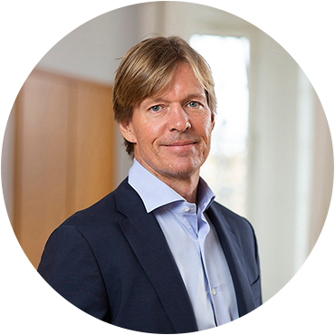
Patrik Wahlén och Karl Perhagen är grundarduon som fortfarande styr bolaget genom sitt starka ägande och aktiva styrelseposter. Anders Stenbäck är vd och ägare också för runt 65 mkr.
Volati vill äga medelstora bolag och vara den bästa ägaren. Affärsidé är att förvärva bolag med beprövade affärsmodeller, ledande marknadspositioner och starka kassaflöden till rimliga värderingar och vidareutveckla dessa med fokus på långsiktigt värdeskapande.
Finansiella målen kokar ner till minst 15 procent EBITA tillväxt över en konjunkturcykel, 20 procent avkastning på justerat eget kapital och en maximal skuldsättning genom nettoskuld/EBITDA på max 3,5.
Över tid är det rimligt att tro att Volati når sina mål, då företaget bevisligen har gjort det under en längre tid tidigare.
Volati förvärvar runt 4-8 bolag om året, med en total omsättning på runt 800 mkr, givet att tidigare historik får vara en guidning för vad framtiden har att erbjuda. Vid en anblick till nettoskuldsättningen på runt 2 miljarder SEK på dagens börsvärde 7,2 miljarder kan det anses vara ganska högt då vinsten är på rullade 12 månader 450 miljoner.
Med det i tankarna är det troligt att lågkonktur samt den byggexponering som Volati har kommer leda till färre förvärv kommande året eller åren.
Industri, Salix Group och Ettiketto Group
Salix Group erbjuder produkter för bygg och industri, primärt beslag, förnödenheter, insatsvaror och emballage. Affärsområdet erbjuder vidare ett brett utbud av produkter för hem och trädgård samt lant- och skogsbruk. Erbjudandet omfattar både egna varumärken och externa varumärken.
Ettiketto Group är en nordisk marknadsledande leverantör av självhäftande etiketter för en mängd olika applikationer som konsumentvaror, livsmedel och industri. Bolaget har också ett heltäckande sortiment av etiketteringsmaskiner som integreras i kundernas produktionslinjer.
Affärsområde Industri består av fyra verksamheter med ledande marknadspositioner i sina respektive nischer. Verksamheterna är tillverkande leverantörer av lösningar inom skilda branscher – spannmålshantering, fukt- och vattenskadehantering, infrastruktur för telekom och belysning, samt sten- och cementprodukter för infrastruktur och mark- och takbeläggning.
Portföljen består av ca 50 bolag, jag väljer därmed inte att presentera varje, men vissa bolag anser jag är extra intressanta, exempel på detta är Corroventa.
Corroventa utvecklar, tillverkar, säljer och hyr ut produkter av högsta kvalitet för vattenskador, fukt, lukt och radon. Marknadsledare inom sin nisch, producerar i Sverige och har möjligt att hyra ut sin park av avfuktare till kunder i Europa. I samband med allt fler översvämmingar och ostabilare väder är Corroventa väldigt väl positionerade.
Nuvarande 13x EV/EBIT för Volati låter billigt, Samtidigt finns det en risk att kraschen inom bygg inte är klar än och det finns mer på nedsidan. Å andra sidan har inte Volati påvkeras så starkt än, speciellt inte om man jämför med andra bolag med exponering mot bygg som Byggmax. Volati har uppvisat en 23 procentig CAGR i EBITA på 10 årssikt.
Base case
I ett sceniaro där Volati växer EBITA med 15 procent CAGR i EBITA kommande 10 åren, då är Volati värt att runt 18x EV/EBIT i min bok i dagsläget. Med tanke på att det antagligen blir lite färre förvärv under kommande åren, pga skuldsättning, så är 18x lite mycket i dagsläget. 16,5x anser jag en rimligt summa att betala för Volati. Det ger en värdering på 110 SEK aktien och en säkerhetsmarginal på 27 procent.
I ett bullish scenario tror vi att det sker ännu fler synergier mellan befintliga industrier. Regionalisering leder till att allt fler vill sourca sina varor från Volatis bolag. Corrventa rider på vågen av allt fler extremväder och översvämmningar, varje hushåll behöver en avfuktningsmaskin och pump. Byggbranschen ser ingen nedtrappning, utan marginalerna närmar sig 10 procent och omsättningstillväxten får nytt bränsle i samband med att befintliga verksamheter genererar pengar. 25 procent tillväxt kommande 10 åren och en lite högre marginal leder till en EV/EBIT på 25x likt det vi såg under 2021. En aktie är då värd 167 SEK.
I ett bearish scenario slår byggkonjunkturspöket till, omsättningen går ner 20 procent och marginalerna tynar bort. Räntorna på lånen blir tunga och det ser mörkt ut att få till något förvärv eller att beta av på skulden. EV/EBIT sticker iväg till 40x, då ebit har försvinnit och ser ingen ljusning. Kommande 10 år bjuder på svaga 3 procent EBITA tillväxt vilket motiverar EV/EBIT på 9x. En aktie är då värd 60 SEK.
Bolag i portföljen
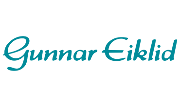
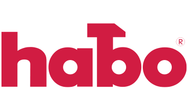
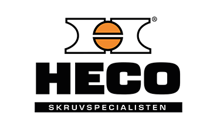
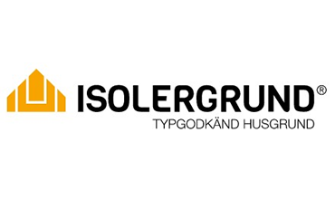
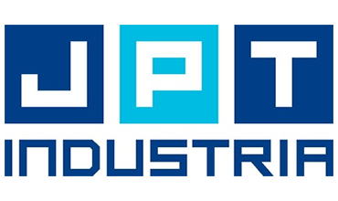
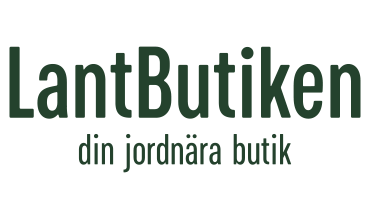
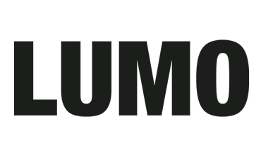
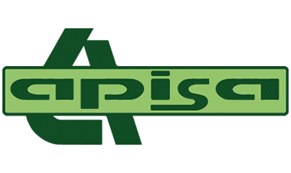
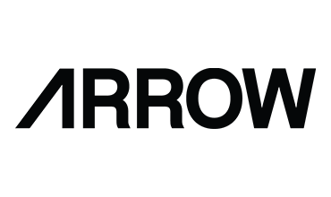
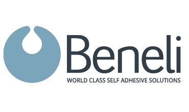
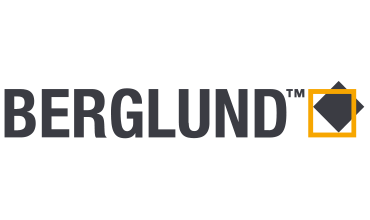
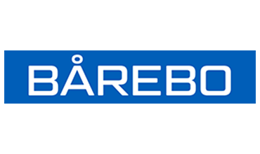
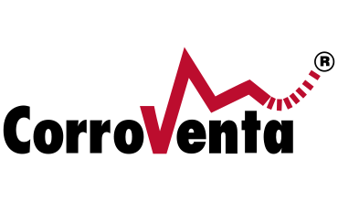
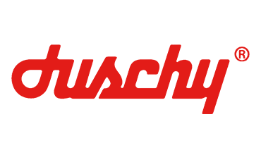
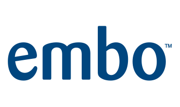
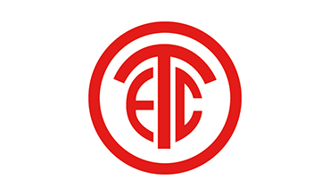
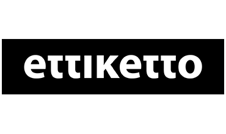
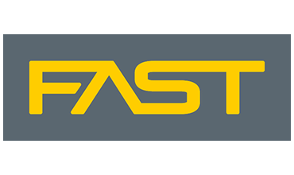
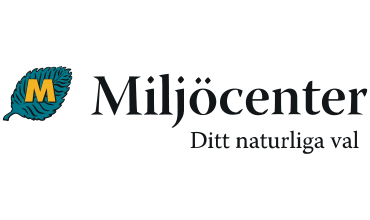
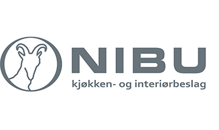
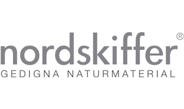
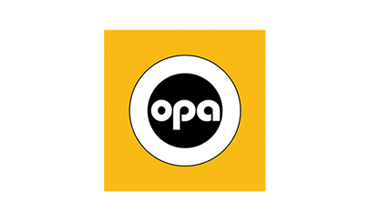
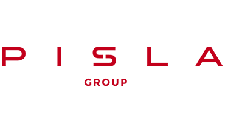
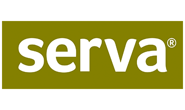
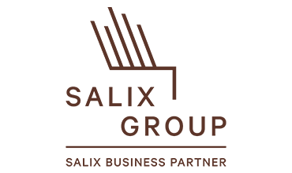
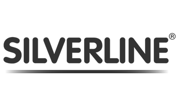
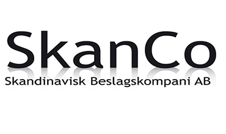
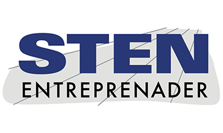
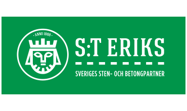
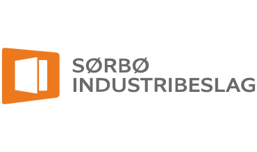
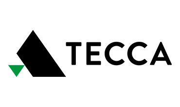
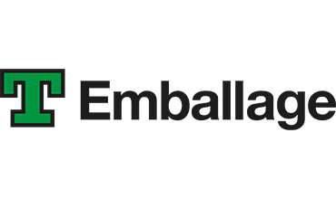
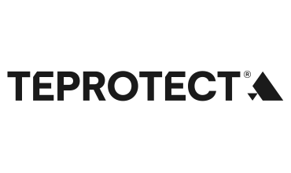
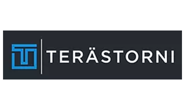
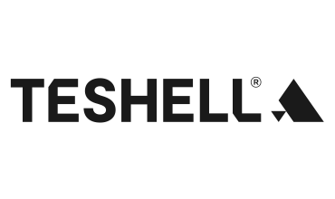
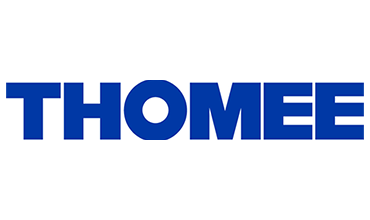
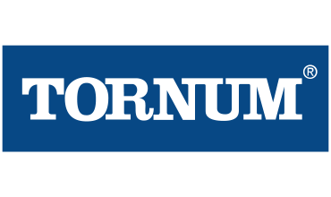
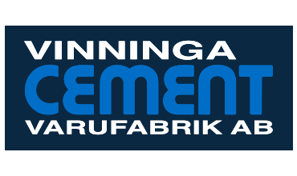